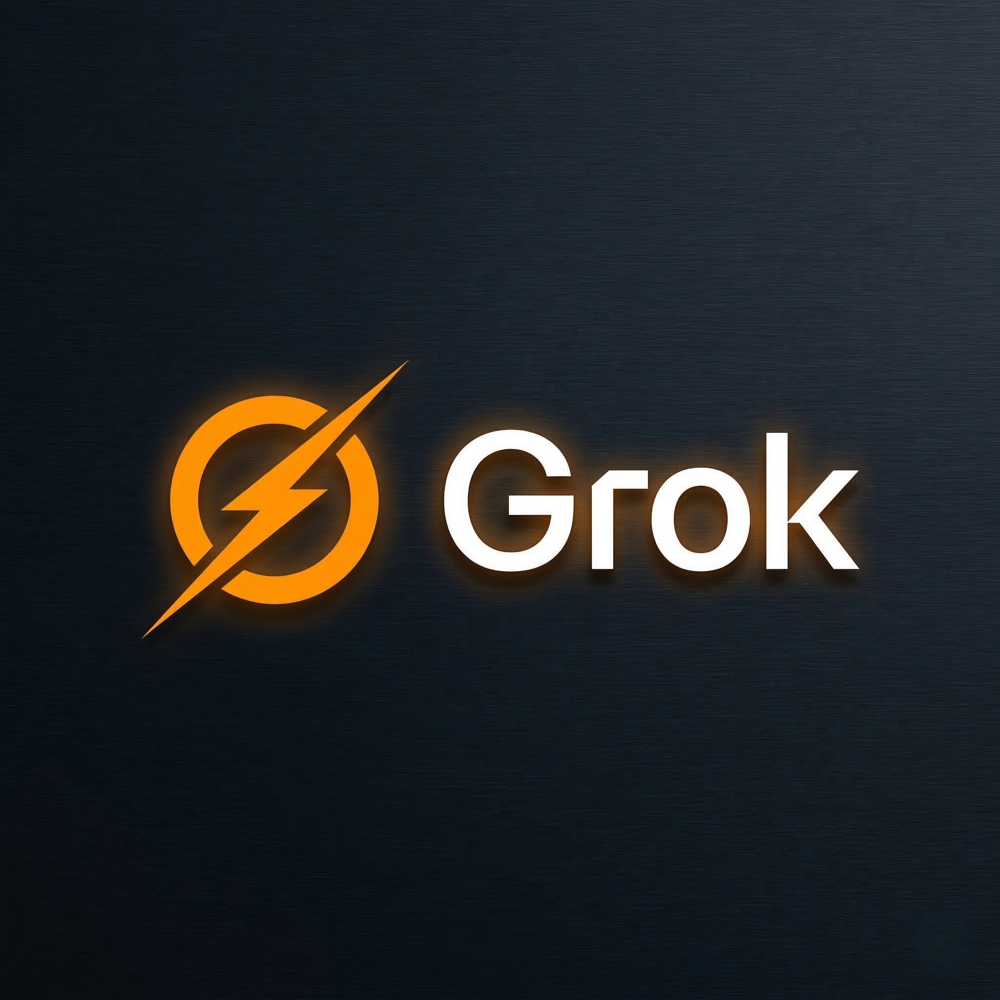

Grok AI: The Ultimate Guide to Elon Musk's Real-Time AI
A complete practical guide in Hindi + English — Master social media trends, viral marketing, and live data analysis using xAI's Grok.
Introduction to Grok AI (परिचय)
Grok AI ek next-generation AI chatbot hai jise Elon Musk ki company xAI ne develop kiya hai. Iska naam "The Hitchhiker's Guide to the Galaxy" se inspired hai. Baki AI models (jaise ChatGPT) ke mukable Grok thoda "Rebellious" aur "Witty" hai. Yeh spicy sawalon ka mazakiya aur direct jawab dene ke liye jana jata hai.
How it Works — Grok AI कैसे काम करता है?
Grok ka sabse bada advantage iska Real-Time Twitter (X) Integration hai.
- Live Data Stream: Iske paas X (Twitter) par hone wali live conversations aur breaking news ka direct access hota hai.
- Less Censorship (No Filter): Grok ko design kiya gaya hai ki yeh political correctness ya strict filters se thoda azaad rahe aur sachhai direct format me pesh kare.
- Grok-1.5 LLM: Iska core Large Language Model logic, coding, aur mathematics me bohot fast aur accurate hai.
Top Use-Cases & Practical Applications
- Social Media Trend Analysis: Twitter par kya viral ho raha hai, usko samajhna aur summarize karna.
- Viral Marketing Campaigns: Witty aur humorous (mazakiya) marketing copies likhna jo easily viral ho sakein.
- Live News Tracking: Stock market crashes, sports events, ya political news ko real-time me track karke reports banana.
- Satire & Comedy Writing: Memes, funny scripts, aur roast content generate karna.
Free vs Paid (Pricing Strategy)
Agar aap Grok use karna chahte hain, toh iska structure baki AI se alag hai:
- Not Free: Grok AI ka koi free standalone version nahi hai.
- X Premium Subscription: Isko use karne ke liye aapko X (Twitter) ka Premium ya Premium+ subscriber hona padega. Yeh ek add-on feature ki tarah X app me milta hai.
💰 Earning Idea: Grok AI से पैसे कैसे कमाएं?
Grok ka live data access ise Social Media Trend Jacking ke liye sabse best tool banata hai. Aap Brands aur Creators ke liye "Viral Strategist" ban sakte hain.
Step-by-step Process: Grok ka use karke live viral trends pakdein. Prompt dein: "Analyze the top 3 viral trends on X in India right now. Write a witty and sarcastic thread connecting these trends to digital marketing, suitable for a tech brand." Is highly engaging content ko aap businesses ko sell kar sakte hain ya apna khud ka Viral X Theme Page grow karke sponsorships le sakte hain!
Frequently Asked Questions (FAQs)
Q: How is Grok different from ChatGPT?
A: Grok ke paas X (Twitter) ka real-time data stream hai jisse yeh seconds pehle hui breaking news bata sakta hai. Sath hi, iska tone ChatGPT se zyada casual, funny aur uncensored hai.
Q: Can Grok write code?
A: Haan, Grok-1.5 model coding, debugging aur mathematical reasoning me bohot powerful hai aur complex code snippets generate kar sakta hai.